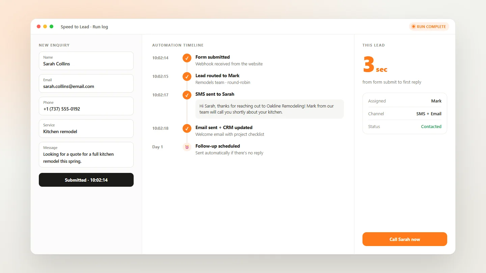

AI & Automation
Speed to Lead Automation
Instant responses to new enquiries, so leads hear back in seconds.


Project snapshot
An automation that responds to new enquiries within seconds, routes them to the right person and runs the follow-up sequence, because the first business to reply usually wins the job.
- Project
- Speed to Lead Automation
- Type
- AI & Automation
- Services
- Workflow Automation
- Lead Management
- Integrations
- Tools
- n8n
- Webhooks
- SMS & Email
- CRM
- Key capabilities
- Instant Response
- Lead Routing
- Follow-up Sequences
- CRM Logging
- Alerts
- Status
- Delivered · private client system
01Overview
ProjectOverview
Leads go cold fast. Someone who fills in a form and hears nothing for hours has usually contacted a competitor by then. This workflow makes sure every enquiry gets a reply straight away.
When a form, ad or website enquiry comes in, the lead immediately gets a personal message, the right team member is alerted, and a follow-up sequence starts if there's no response. Everything is logged to the CRM, so nothing slips through.
02Key features
KeyFeatures
- Reply in secondsEvery new enquiry gets an instant, personal first message.
- Smart routingLeads sent to the right person based on service or location.
- Follow-up sequencesAutomatic nudges until the lead responds or books.
- Multi-channelSMS, email or WhatsApp, depending on what the lead prefers.
- CRM loggingEvery touchpoint recorded against the lead.
- Team alertsInstant notifications so a person can step in quickly.
More projects
Explore more work.
 AuraWeb Design & Development
AuraWeb Design & Development OiyoWeb Design & Development
OiyoWeb Design & Development Go AbroadWeb Design & Development
Go AbroadWeb Design & Development Forno RossoWeb Design & Development
Forno RossoWeb Design & Development Evo DentalWeb Design & Development
Evo DentalWeb Design & Development One NationWeb Design & Development
One NationWeb Design & Development AI Calling AgentAI & Automation
AI Calling AgentAI & Automation WhatsApp AutomationAI & Automation
WhatsApp AutomationAI & Automation AI Lead Enrichment & CRM SyncAI & Automation
AI Lead Enrichment & CRM SyncAI & Automation RAG ChatbotsAI & Automation
RAG ChatbotsAI & Automation